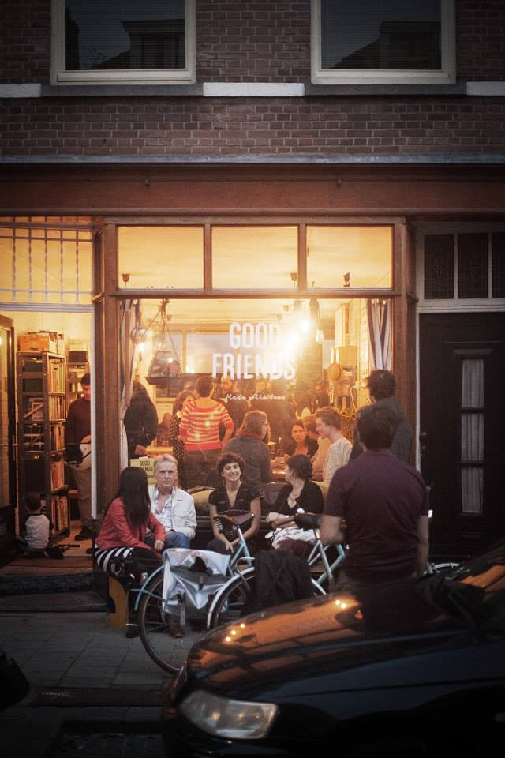

Get in touch.

For a good time call…
M: +31 (0)6 46 28 76 92
or write to
info(at)contentcontext.org
Internship Requests
info(at)contentcontext.org
Please limit attachments to 5mb maximum.
If you are requesting an internship, please
clearly state your intention and available dates.